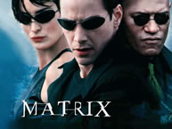
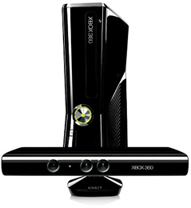

Jogos eletrônicos(){
i++
Aplicações

No longa-metragem Matrix, lançado em 1999, os personagens se conectam a um mundo virtual através de máquinas especiais que levam a consciência de quem a utiliza para o mundo gerado por computador. Ainda estamos longe de uma tecnologia como essa, mas, aos poucos, a ciência nos traz o mundo dos cinemas para a vida cotidiana. Hoje em dia já temos diversas aplicações da realidade aumentada, nas mais diversas áreas, claro que uma delas é o mundo dos games, e é com ela que iniciamos nossa seção de aplicações!
Jogos e realidades
Já existem diversas aplicações que utilizam os conceitos de realidade aumentada e realidade virtual em jogos eletrônicos. Contudo, desde que a Microsoft anunciou, em junho de 2009, o Projeto Natal, o mundo não tira os olhos dessas tecnologias.
O Kinect, nome de mercado para o Projeto Natal, é um acessório para o XBOX 360 - console da Microsoft - que traz aos videogames uma maneira inédita de se interagir com o mundo virtual. O dispositivo, basicamente, reconhece os movimentos, o rosto e a voz do gamer, traduzindo tudo isso em comandos para o jogo. Se o usuário pula, por exemplo, seu avatar na tela pula também. Ao chegar na frente da televisão, o videogame pode reconhecer que é você e carregar suas configurações pessoais. Para assistir a um filme o controle também será dispensável, bastará fazer gestos para que o programa identifique comandos na lista de filmes, escolher um título e dizer as palavras mágicas: "XBox, play movie please".

Microsoft Kinect
O Kinect é composto de duas câmeras: uma RGB, que reconhece rostos e filma o ambiente para reproduzi-lo na tela; e outra IR (infravermelha), que, junto ao emissor IR, reconhece a profundidade e os movimentos dos usuários. Além das câmeras, o Kinect possui também um microfone para detectar os comandos de voz do usuário e um processador próprio.
A maior parte dos jogos já demonstrados no Kinect não apresenta a mistura dos ambientes real e virtual, que se caracteriza pela sobreposição de ambas as imagens na tela. Mas, na E3 de 2009, a Microsoft apresentou o Milo, que, com uma incrível inteligência artificial, consegue detectar a voz, o rosto e a expressão das pessoas. Na apresentação da Microsoft, a mulher que está interagindo com a criança se aproxima do rio e vê seu rosto refletido na água, ainda nessa apresentação ela faz um desenho e o transfere para o jogo através da câmera, Milo então aprecia fazendo comentários sobre a arte, uma demonstração incrível do poder de criação de uma realidade misturada pelo Kinect. Veja o vídeo completo da apresentação:
A Sony também vem apostando suas fichas numa melhor interação jogador-máquina. O Playstation Eye, junto ao Playstation move - que ainda necessita de controles - também permite uma experiência única para usuário ao se tratar de imersão no mundo virtual e realidade misturada.
O Playstation move funciona de forma parecida com os controles do Nintendo Wii: ao invés de muitos botões, os controles captam os movimentos do gamer e os transferem para seu avatar no videogame. O Playstation Eye é semelhante ao Kinect, apesar de mais rudimentar, o dispositivo é composto de uma câmera que permite aplicações de realidade aumentada no console.

Da esquerda para a direita: Playstation Eye, Playstation 3, Playstation Move e controles do PS3. Créditos da imagem: Baixaki.
Um bom exemplo de realidade aumentada no PS3 é o jogo "Eye of Judgement", que simula o que muitos fãs do desenho animado "Yu Gi Oh" queriam fazer há muito tempo. No anime "Yu Gi Oh" os personagens jogam card games de uma forma inusitada: as magias e monstros descritos nas cartas saem do papel e atuam no mundo real. No jogo “Eye of Judgement”, o Playstation Eye filma uma partida do card game e mostra no monitor o mundo real - filmado pela câmera - junto aos objetos virtuais projetados pelo jogo através da análise das cartas no tabuleiro. Veja no vídeo abaixo:
Ok, o Kinnect é uma tecnologia espetacular e o Playstation Eye não economiza em criatividade para nos divertir com a realidade aumentada, mas seria injusto passar toda esse matéria sem falar do Nintendo Wii. Talvez, se não fosse por ele, nem teríamos ainda no mercado novas formas de interação com os jogos eletrônicos, pois o Wii foi o precursor de toda essa revolução no mundo dos vídeo games.

Nintendo Wii
O Nintendo Wii foi o produto do mundo dos games de maior sucesso dos últimos tempos. Quando “jogar videogame” era sinônimo de sentar, olhar para um monitor e apertar uma série de botões, a Nintendo resolveu inovar e eliminar a associação entre jogos eletrônicos e sedentarismo. Com seu novo console, além de mudar o paradigma, a criadora do bom e velho Super Nintendo atraiu novos públicos para este mercado e ensinou aos gamers de plantão como jogar tênis, lutar box, fazer de ginástica e, consequentemente, suar na frente de um videogame.
O Wii foi por quatro anos a escolha da vez na hora de se comprar um videogame, mas, em setembro deste ano, chegou ao mercado o Playstation Move e em novembro temos o lançamento do tão esperado Kinect. O mundo dos jogos eletrônicos está evoluindo numa velocidade impressionante e o Wii parece estar perdendo seu lugar. Será que podemos esperar uma reação da Nintendo e nos surpreender novamente com a tecnologia dos games?
}